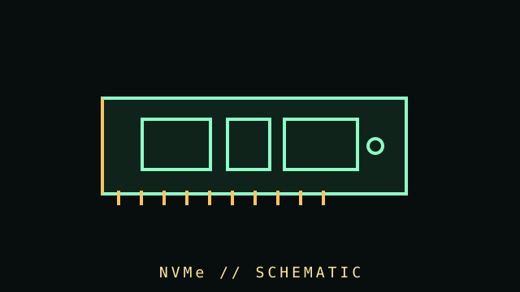

[ SUBCATEGORY DIRECTORY // 03 FILES // 148 PART RECORDS ]
Browse NVMe SSD subcategories
Every listed model has a dedicated record; product-level detail and compatibility notes are in each leaf listing and component file.
Browse individual client and enterprise drive records, exact-model sources, compatibility and thermal/service details.
OPEN SUBCATEGORY FILE →SUBCATEGORY FILE // 73 PART RECORDSPCIe 4.0 NVMe drivesBrowse individual client and enterprise drive records, exact-model sources, compatibility and thermal/service details.
OPEN SUBCATEGORY FILE →SUBCATEGORY FILE // 38 PART RECORDSPCIe 5.0 NVMe drivesBrowse individual client and enterprise drive records, exact-model sources, compatibility and thermal/service details.
OPEN SUBCATEGORY FILE →[ COMPONENT RECORD // NON-VOLATILE MEMORY ]
NVMe
drives.
NVMe is a storage command protocol designed for non-volatile media over PCI Express. It is not a physical shape: common NVMe SSDs use M.2 modules, add-in cards, or U.2/U.3-style devices.

CLASS RECORD: host-attached NVMe storage. M.2 sockets can support SATA, PCIe/NVMe, or both; a compatible-looking socket does not establish protocol support.
Reference specifications
| Protocol | NVMe defines host-controller and command behavior. The link is PCI Express; supported NVMe revision and optional features vary by drive and host. |
|---|---|
| M.2 size | 2280 means 22 mm wide × 80 mm long; 2230, 2242, and 22110 are other common lengths. Verify board standoff and module clearance. |
| Link | PCIe generation and lane count (often x4 for high-performance consumer modules) determine theoretical link bandwidth; negotiated link can be lower. |
| Thermals | Controller and NAND temperature affect sustained performance. Heatsink clearance, airflow, firmware, workload, and thermal throttling differ by model. |
Compatibility checklist
- Read the motherboard manual for socket length, supported protocol, PCIe generation/lane allocation, boot support, and shared SATA/PCIe lanes.
- Compare keying, module length, double-sided clearance, heatsink height, and any board-installed M.2 cover.
- Check firmware update guidance and operating-system NVMe support before deploying an older system.
- Review exact model endurance, warranty, sustained-write behavior, power-loss protection, and encryption claims in the manufacturer's datasheet.
- Keep firmware updates and backup copies; high benchmark bursts do not describe sustained workloads or reliability.
Sources & further reading
- NVM Express — SpecificationsPrimary NVMe specifications and revision documents.
- PCI-SIG — PCI Express specificationsPrimary PCI Express standards reference.
- Kingston — SSD form factors and protocolsManufacturer guide distinguishing M.2, SATA, and NVMe terminology.